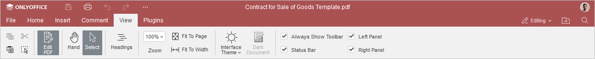
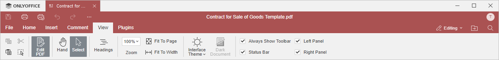

Kartica Prikaz
Kartica Prikaz u PDF Uređivaču omogućava upravljanje izgledom PDF-a tokom rada, kao i jednostavnu navigaciju kroz dokument.
Odgovarajući prozor u Online PDF Uređivaču:

Odgovarajući prozor u Desktop PDF Uređivaču:

Mogućnosti prikaza dostupne na ovoj kartici:
- Panel Naslovi prikazuje listu svih naslova i nivoa. Kliknite na naslov da biste odmah prešli na traženu stranicu.
- Zumiranje omogućava uvećavanje i smanjivanje prikaza PDF-a.
- Prilagodi stranici omogućava da se PDF prikaže tako da cela stranica bude vidljiva na ekranu.
- Prilagodi širini omogućava da se PDF skalira na širinu ekrana.
- Tema interfejsa omogućava promenu teme interfejsa birajući između opcija Ista kao u sistemu, Svetla, Klasik svetla, Tamna, Kontrastno tamna, Siva, Modern svetla i Modern tamna.
- Opcija Tamni dokument postaje aktivna kada je izabrana tamna ili kontrastno tamna tema. Kliknuti na ovu opciju omogućava da i radni prostor bude u tamnom režimu.
Sledeće opcije omogućavaju da podesite prikaz određenih elemenata. Označite opcije da biste ih prikazali:
- Uvek prikazuj alatnu traku da bi gornja alatna traka bila stalno vidljiva.
- Statusna traka da bi statusna traka bila stalno vidljiva.
- Levi panel da bi levi panel bio vidljiv.
- Desni panel da bi desni panel bio vidljiv.